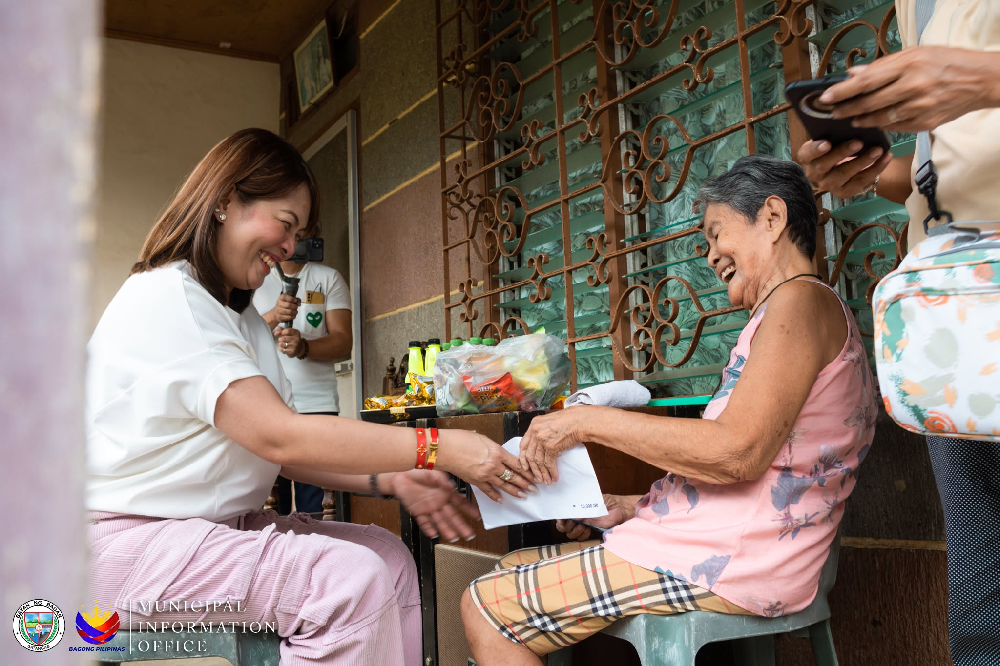
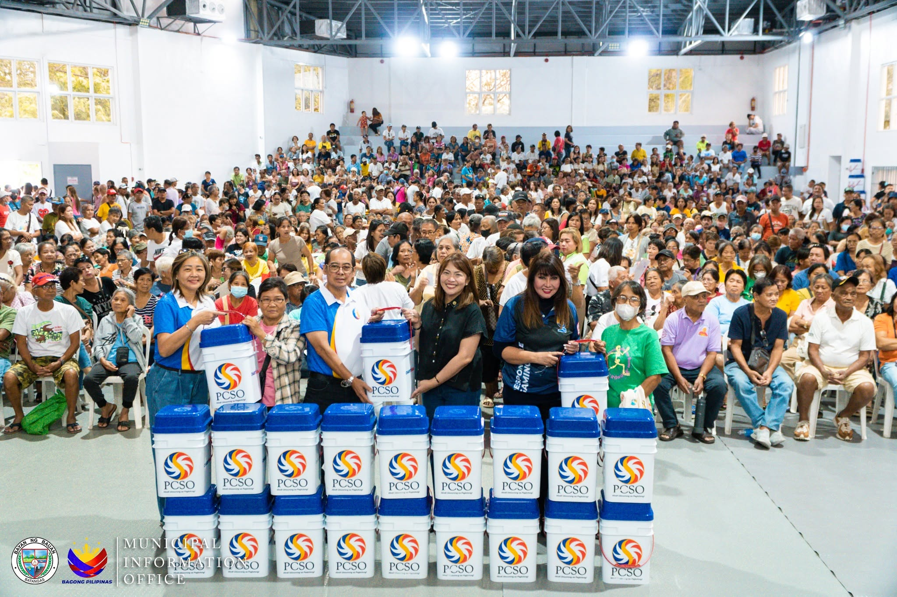
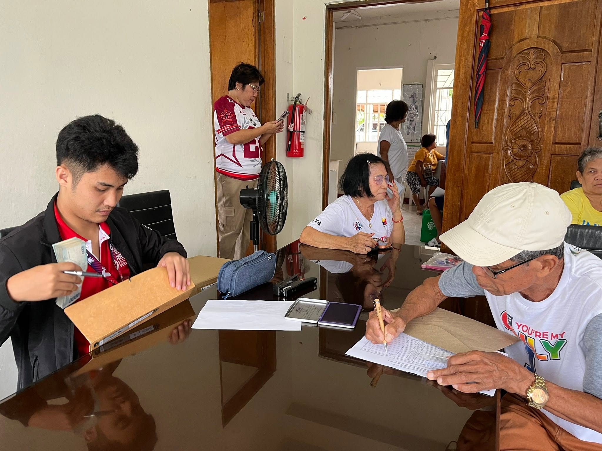
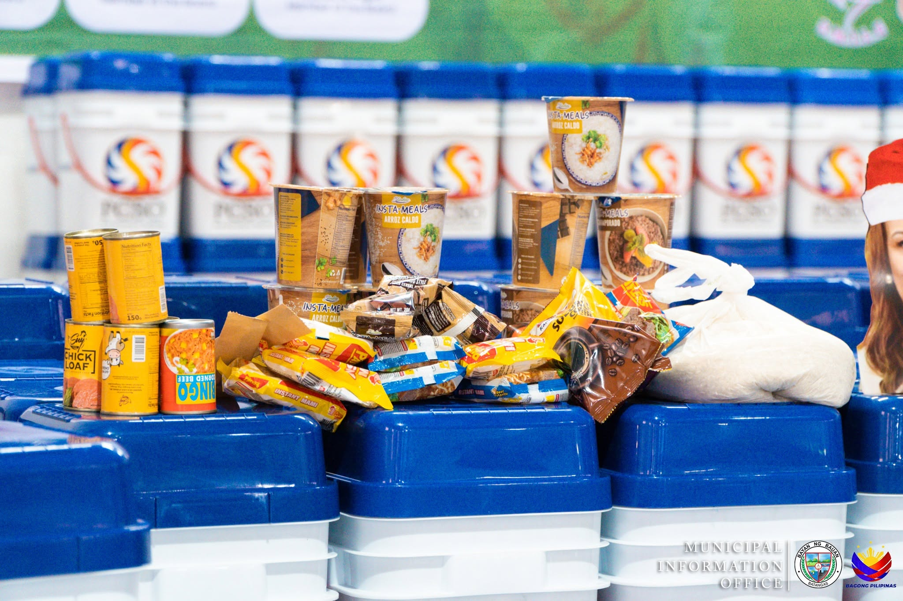

Social Pension
Qualified senior citizens receive monthly cash assistance under the Social Pension Program. OSCA Bauan helps local elders claim their stipend and ensures timely disbursement from DSWD.

Dedicated to honoring and serving the vibrant senior citizen community of Bauan with dignity, respect, and accessible care.
A COMMUNITY THAT CARES
Established under the Expanded Senior Citizens Act, we provide accessible services, social pension distribution, health programs, and community engagement initiatives.
We honor the wisdom and contributions of our elderly population, ensuring they live with dignity, security, and opportunities for active participation.
Visit Facebook Since 1993
Since 1993SENIOR CITIZEN SUPPORT
OSCA Bauan supports senior citizens through programs and services aligned with national law and tailored to local needs. These benefits include both cash assistance and community-based support through the municipal senior citizen office.
Qualified senior citizens receive monthly cash assistance under the Social Pension Program. OSCA Bauan helps local elders claim their stipend and ensures timely disbursement from DSWD.
Seniors in Bauan gain access to medical missions, free checkups, and referral support for hospital care through coordinated barangay and municipal health programs.
OSCA offers seminars, livelihood workshops, and skills training designed for elderly residents so they can stay active and connected in the community.
Senior citizens are entitled to local and national discounts on medicine, transportation, and other essential services when they present their valid OSCA ID.
THE PEOPLE MAKE THE PLACE
Every shared meal, new friendship, and familiar smile is part of a stronger community.
OSCA Bauan community programs



BEFORE YOU BEGIN
Can't find what you're looking for? Our virtual assistant can help you find a starting point.
The application is for residents who are 60 years old and above. OSCA Bauan can confirm the current requirements and accepted proof of age and residency before you visit.
Please contact OSCA Bauan before visiting to confirm the current application requirements and supporting documents.
Call the OSCA office to discuss available assistance and the documents a representative may need to bring.
GET IN TOUCH
Tap a card for directions, to call, or to email us. We're here to help.
Online